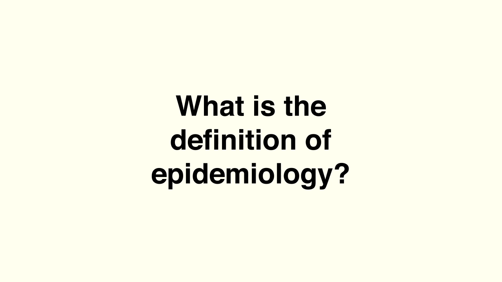
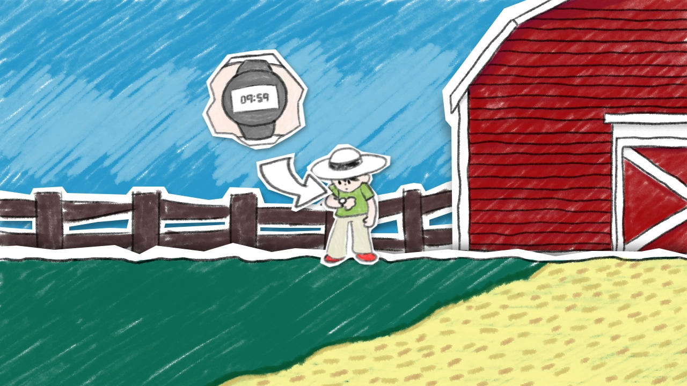
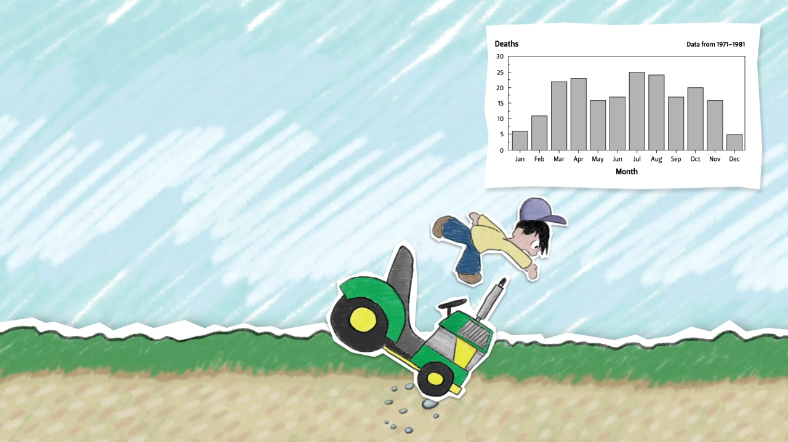
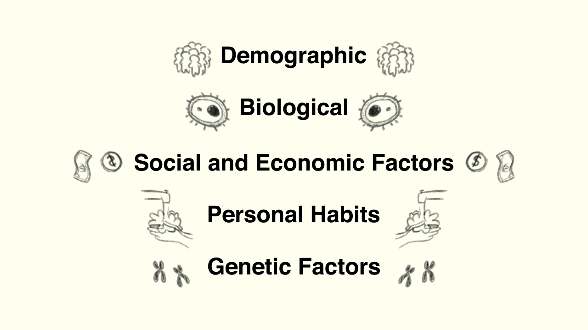
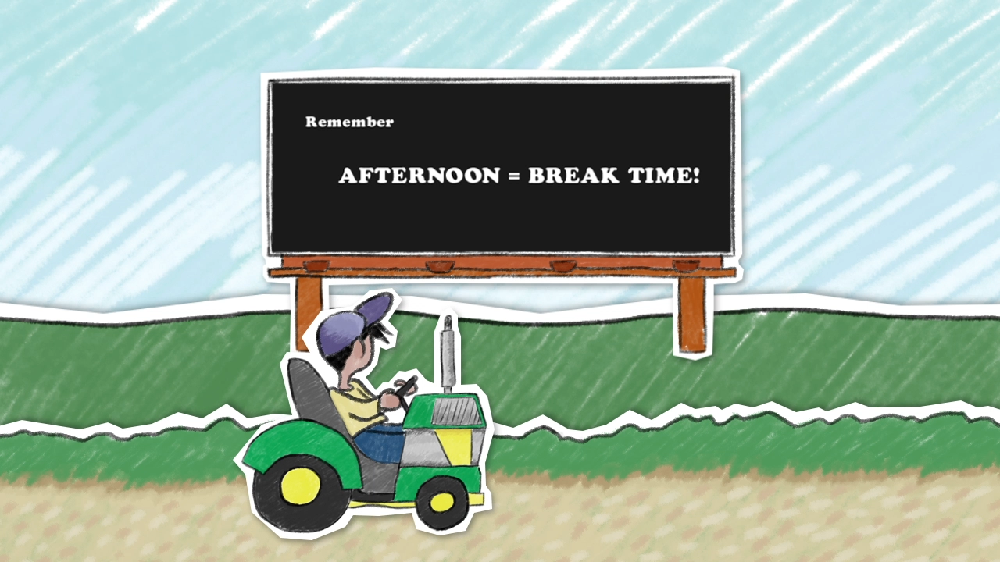

Copyright © 2019
All rights reserved
Design by Paul Weaver
Thinking Like an Epidemiologist
Educational animation for Oregon State Ecampus at Oregon State University. Through several basic examples, the video explores the ways that epidemiologists analyze disease occurrence.





Thinking Like an Epidemiologist Screencaps, 2018